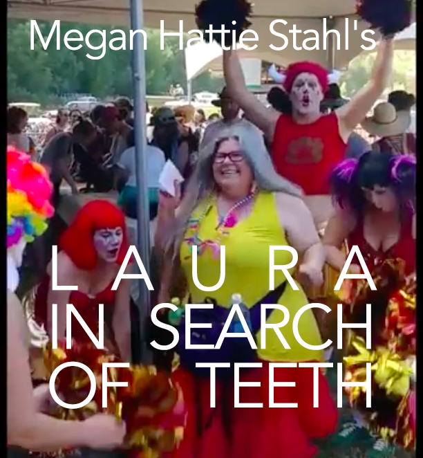

OCTOBER 27TH, 2018
5PM
DEAR DREAMER
MUSIC VIDEO RELEASE
SCREENING AND LIVE SHOW
100 ROCHESTER AVENUE, BROOKLYN
DOORS OPEN 5PM | DONATION-BASED ENTRY | ALL-AGES
UPCOMING SCREENINGS

NOVEMBER 3RD The World Premiere of Megan Hattie Stahl's new documentary film, Laura in Search of Teeth, screened alongside two of her other recent works.
Doors at 7, Screening at 7:30 pm
Screening will be followed by a rousing Q&A with the filmmaker.
PROGRAM
Be Cute, Now!
4 min, 2017, MHSWhy do people turn into filmmakers once they become parents? What are they trying to capture when filming their children, treating them as adorably charismatic hosts of talk show with an audience of few? And what if their children don't follow the script?
Laura in Search of Teeth
33 min, 2018, MHSLaura L. Brown is a collector of oddities, Facebook entertainer, and self-proclaimed Christian Hippie Freak living in McMinnville, Oregon. Her family is still getting used to it. An intimate look at life, death, trauma, and the wonders of formaldehyde. The film features an original score by Megan Hattie Stahl and Nate Terepka.
Note: Contains sexual content, mentions of sexual violence, and graphic footage of human organs.
LET THERE BE LIGHT